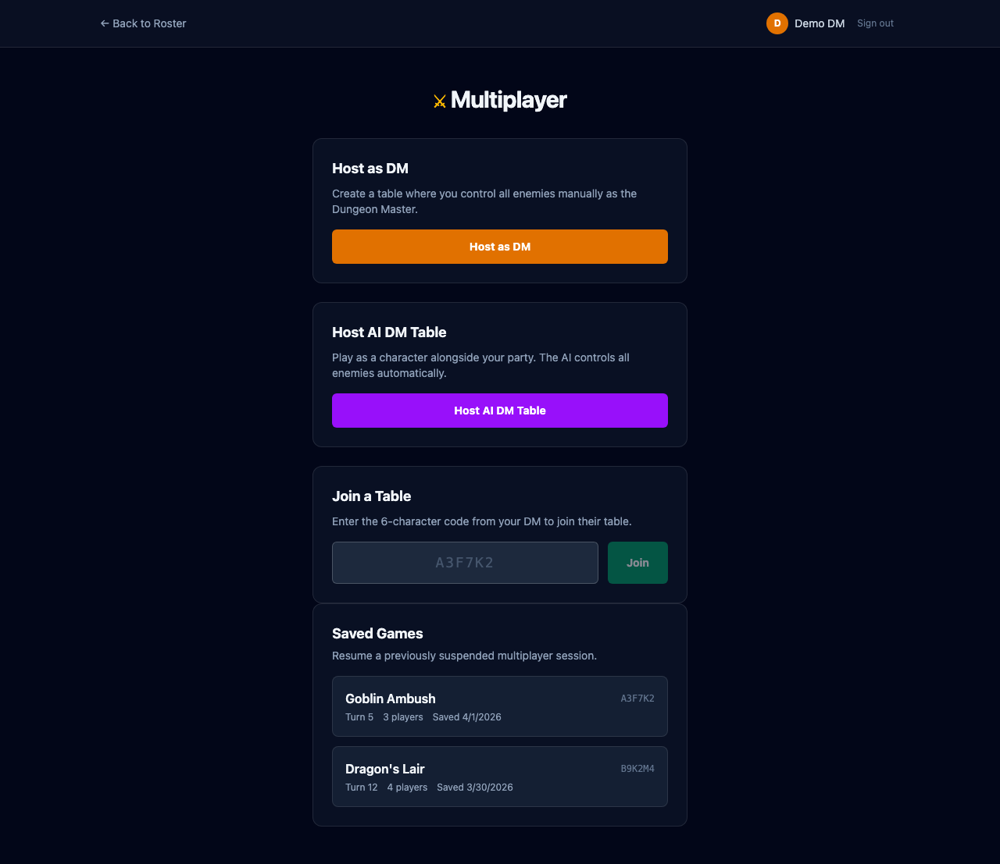
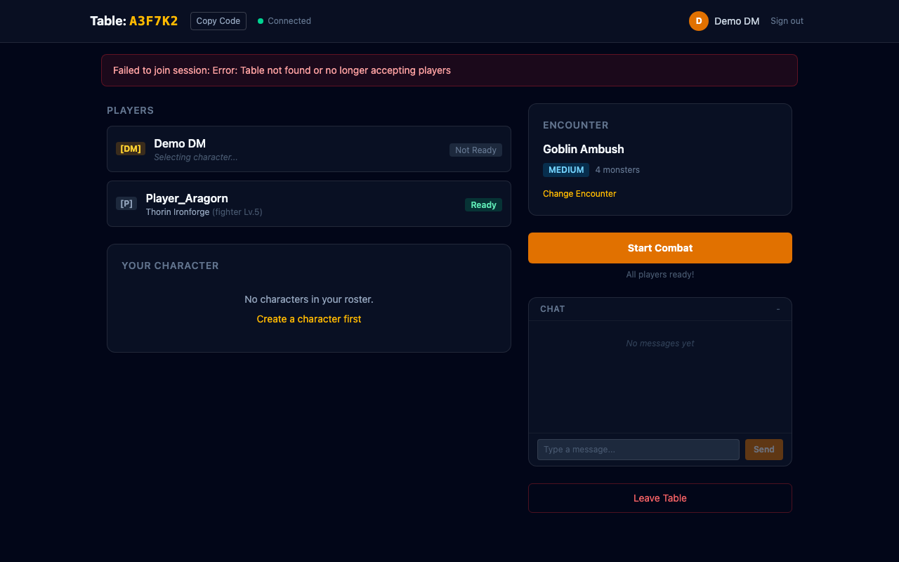
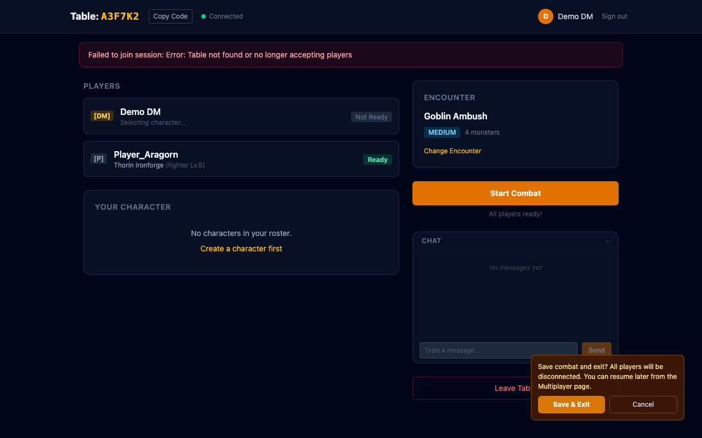

Feature branch: feat/session-resume | Closes #71
The DM can now save combat mid-session and resume it later. Suspended sessions appear on the Multiplayer page with encounter name, turn number, and player count. Players rejoin via the same table code.
Suspended sessions appear below the Host/Join cards. Each entry shows the encounter name, table code, turn number, player count, and save date. Click to rejoin and resume.

When a session has saved combat state, the lobby shows a green "Resume Saved Combat" button above the normal Start Combat button. Players rejoin and the DM resumes when ready.

During combat, the DM sees a "Save & Exit" button in the sidebar. Clicking it shows a confirmation dialog explaining that all players will be disconnected and the session can be resumed later.

'suspended' — persists combat state + ownership map to DBsaveAndExitCombat() — broadcasts session_suspended, cleans up all clientsdeserializeCombatState() — reconstructs combatStore from JSONB snapshotgetSuspendedSessions(userId) — fetches saved games from SupabaseresumeSession() / resumeCombat() — reloads session, restores state, re-broadcasts to players'suspended' to status CHECK and ownership_map JSONB column